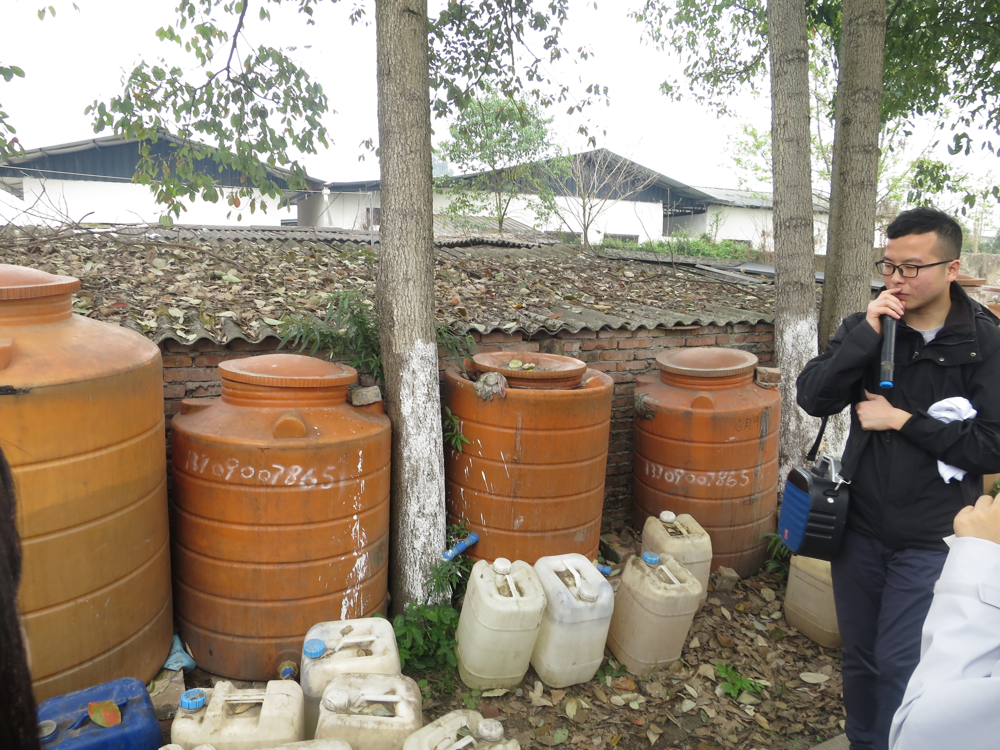
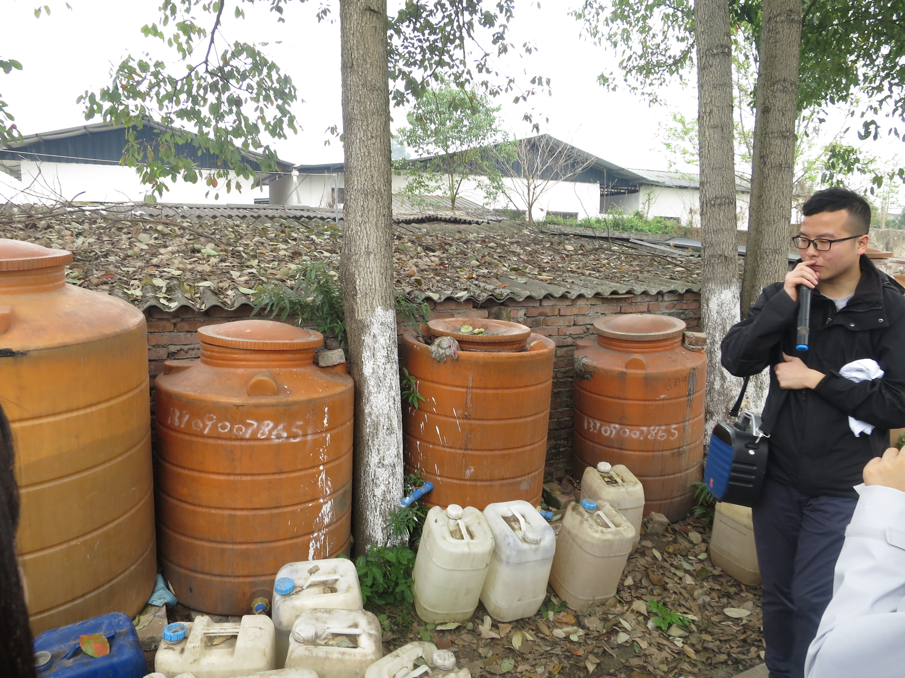

How we treat our waste
We collect our leftover food and crops that have spoilt and ferment it. This allows us to get a compost pile and we can subsequently use it to fertilise our soil
We collect our leftover food and crops that have spoilt and ferment it. This allows us to get a compost pile and we can subsequently use it to fertilise our soil
